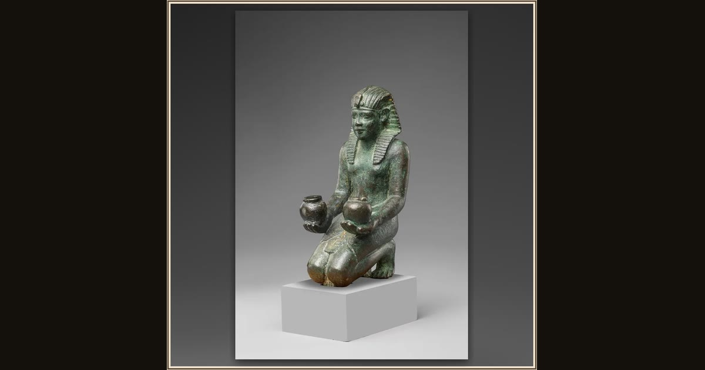

Kneeling statuette of King Amasis
Late Period, Saite Period · 570–526 BCE · met
A bronze statuette of King Amasis kneeling and holding out two offering jars, the Saite king whose rise to the throne after Apries Herodotus narrates (2.172.1) Explore its place in Herodotus's Histories, Book II, chapter 583.